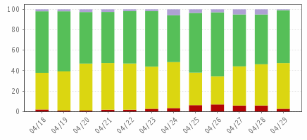

Client Job Success Rate Summary
Server Group=eWidgits - NetBackup | Apr 18, 2012 12:00:00AM - May 01, 2012 03:03:59PM
Client Job Success Rate Summary

Failure Rate
Partial Rate
Success Rate
Mixed Rate